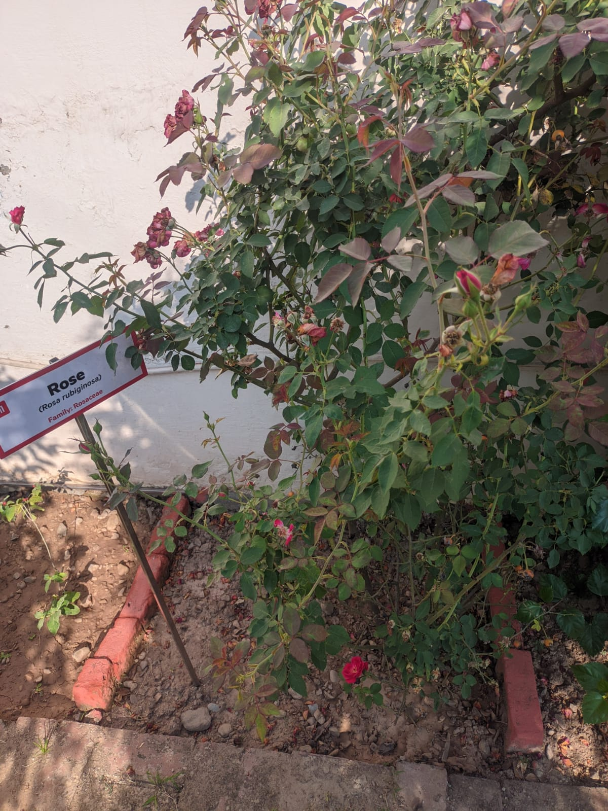
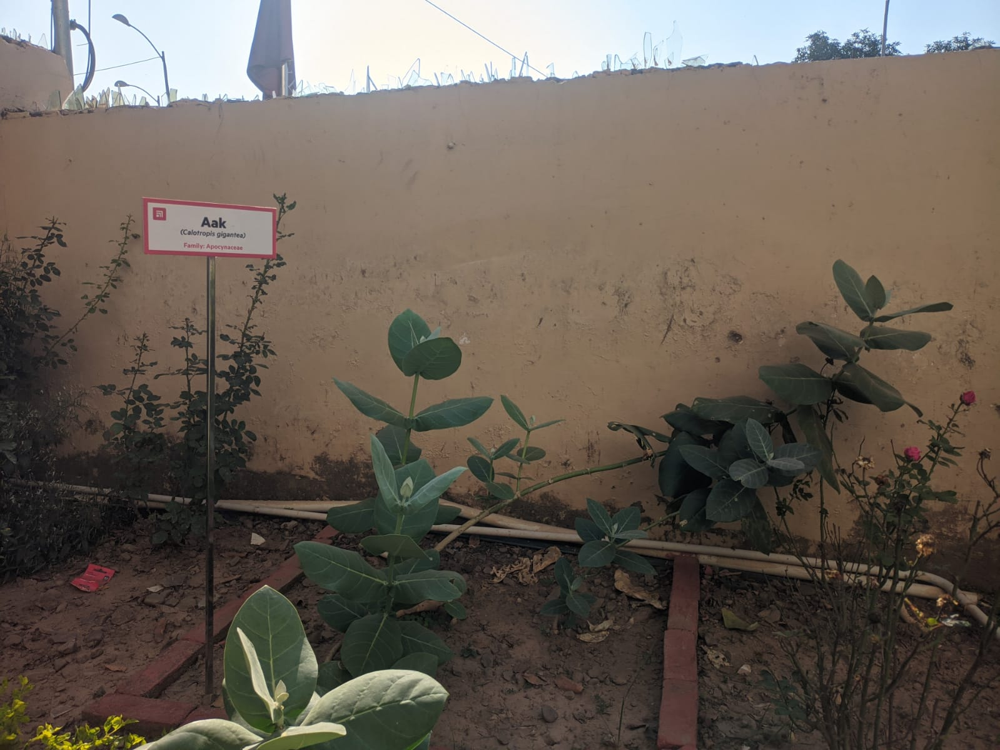
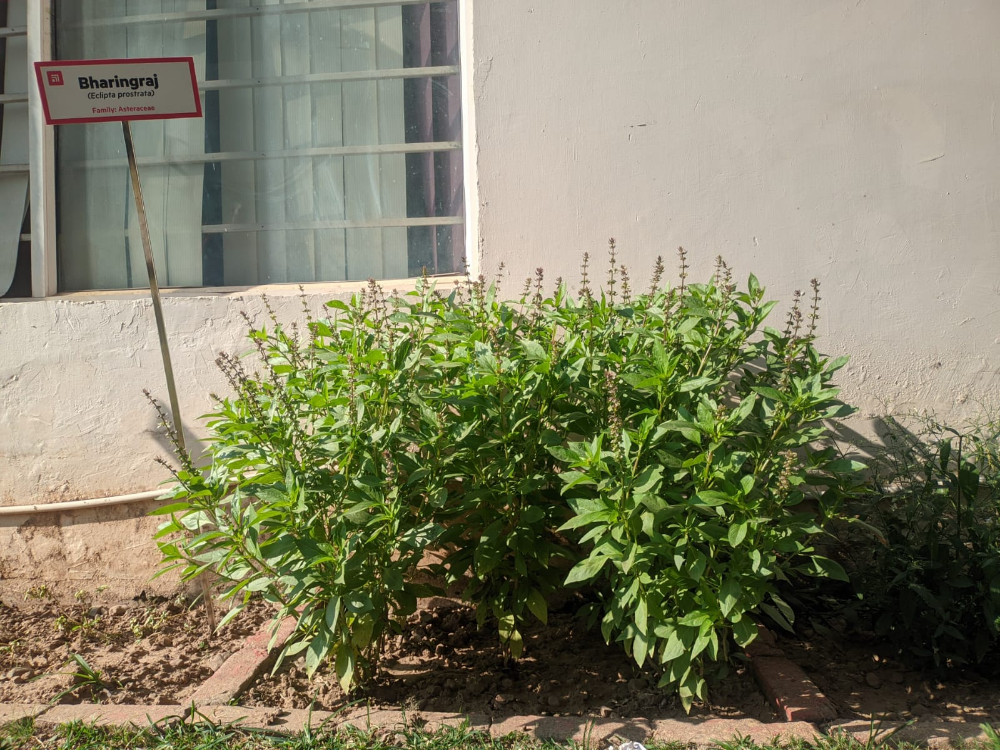
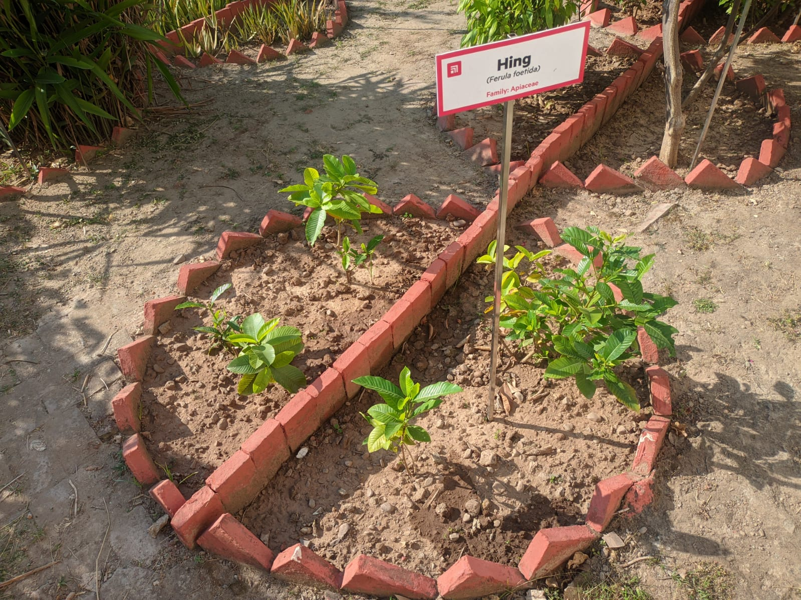

Rose
Roses are popular flowering shrubs with thorny stems and fragrant blooms in various colors. They are widely cultivated for their beauty and used in perfumes, decorations, and more.
Your Complete Guide to Indoor and Outdoor Plants

Roses are popular flowering shrubs with thorny stems and fragrant blooms in various colors. They are widely cultivated for their beauty and used in perfumes, decorations, and more.

Aak (Calotropis procera) is a common plant in India, often found in arid and semi-arid regions. It's known for its milky sap and distinctive flowers. While some parts are toxic, it has traditional medicinal uses in Ayurveda.

Bhringraj, also known as False Daisy, is an Ayurvedic herb renowned for its hair-nourishing properties. It's used in various hair care products to promote hair growth, prevent premature greying, and treat scalp issues like dandruff.

Catharanthus, also known as periwinkle, is a genus of flowering plants. One of its most famous species, Catharanthus roseus, is a source of important cancer-fighting drugs like vincristine and vinblastine. It's also a popular ornamental plant due to its beautiful, colorful flowers.

Hari Elaichi, or Green Cardamom, is a popular spice known for its distinctive aroma and flavor. It's commonly used in Indian cuisine, especially in biryanis, curries, and desserts. Green cardamom also has medicinal properties and is often used in Ayurvedic remedies.

Hing, also known as Asafoetida, is a pungent spice derived from the dried latex of a plant species. It's a key ingredient in Indian cuisine, used to enhance the flavor of curries, dals, and other dishes. While it has a strong odor, it adds a unique taste and is often used in small quantities.

Kala Bansa, also known as Barleria Prionitis, is a medicinal plant used in Ayurveda. It's particularly beneficial for respiratory health, helping to relieve cough, bronchitis, and asthma. Its soothing properties help reduce respiratory spasms and make expectoration easier.

Safed Musli, also known as "White Gold," is a rare Indian herb with a long history of use in Ayurveda. It's prized for its potential to boost libido, improve sexual performance, and enhance overall vitality. It's also believed to have anti-inflammatory and anti-stress properties.
Pinjore-Barotiwala National Highway (NH-105)
Himachal Pradesh – 174 103
Unit No. A 201-202, Elante Mall Office Complex,
Industrial Area, Phase 1, Chandigarh
SCO 160-161, Sector 9-C
Chandigarh 160 009